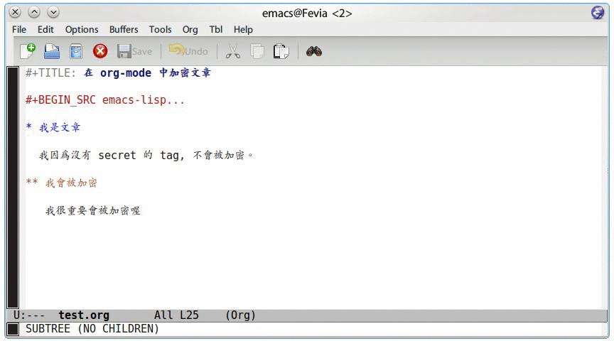

org-mode 除了可以讓你自由自在的寫筆記、文章以外，有些時候我們的筆記某 些區域會希望是能夠進行加密的，這時候透過 emacs 的 Easy PG 功能，可以很方 便的只對文章的某個區域進行加/解密的動作，本文將描述如何在 emacs 下對 org-mode 文件進行加密。
若您想了解這個功能是否適合您，可以先看一下截圖：

環境配置
在使用本文章的資訊之前，你必須確保你的系統安裝有 gnupg，以下列出幾個常見 的 Linux 系統的安裝方式，在大多數的情況下，你不需要自行安裝這些軟體。
| Linux Distro | Install Commands |
|---|---|
| Debian / Ubuntu | apt-get install gpg |
| Redhat / Fedora | yum install gnupg |
| Gentoo | emerge app-crypt/gnupg |
.emacs 配置
要使用這個功能，你必須在你的 .emacs (emacs 設定文件) 下加入以下資訊。
這邊提供我所使用的範本，各設定的詳細功能則會在後面說明。
;; org-mode 設定 (require 'org-crypt) ;; 當被加密的部份要存入硬碟時，自動加密回去 (org-crypt-use-before-save-magic) ;; 設定要加密的 tag 標籤為 secret (setq org-crypt-tag-matcher "secret") ;; 避免 secret 這個 tag 被子項目繼承 造成重複加密 ;; (但是子項目還是會被加密喔) (setq org-tags-exclude-from-inheritance (quote ("secret"))) ;; 用於加密的 GPG 金鑰 ;; 可以設定任何 ID 或是設成 nil 來使用對稱式加密 (symmetric encryption) (setq org-crypt-key nil)
配置說明
當被加密的部份要存入硬碟時，自動加密回去
由於 org-mode 為純文字檔案，如果你的 emacs 有打開檔案備份，則當 emacs 進 行備份的時候，加密的區域並未被加密回去的話，這樣加密就沒有意義了。
;; 當被加密的部份要存入硬碟時，自動加密回去 (org-crypt-use-before-save-magic)
這個設定就是告訴 emacs 說，當檔案存到硬碟的時候，要將該加密的區域加密回去再 進行儲存，這樣就算你有備份文件，也不用擔心文件會因為備份的關係，而 洩漏了加密部份的資訊。
設定要加密的 tag 標籤
在 org-mode 裏面，針對會自動進行加密的區域皆是使用 tags 來進行辨認，在 這邊我設定加密用的 tag 為
secret，這樣當 org-mode 看到目前的項目 tag 為secret時，會自動針對他進行加密的動作。;; 設定要加密的 tag 標籤為 secret (setq org-crypt-tag-matcher "secret")
避免加密用的 tag 被子項目繼承
因為加密的動作是對整個 entry 進行運作，所以這個設定的目的，是必免子 項目繼承了 tag，倒致重複進行加密。
;; 避免 secret 這個 tag 被子項目繼承 ;; (但是子項目還是會被加密喔) (setq org-tags-exclude-from-inheritance (quote ("secret")))
加密用的金鑰
若您對使用 GPG 進行加密很熟悉，這個變數是用來設定你的 GPG Key ID ，如果不知道 GPG Key 是什麼，就設定為 nil 。這樣子當你進行加/解密 的動作時，emacs 會詢問你密碼。
;; 用於加密的 GPG 金鑰 ;; 可以設定任何 ID 或是設成 nil 來使用對稱式加密 (symmetric encryption) (setq org-crypt-key nil)
在 org-mode 裡面進行加/解密
加密某個項目
如果你是按照上面的設定的話，你只要對一個項目設定他的 TAGS 為 secret ，這樣在進行儲存檔案的情況下，emacs 就會自動幫你進行加密了。
你可以將游標移動到你要加密的項目上，並使用 C-c C-C ，會看到你的項目 變成下面這個樣子
* 這個項目要被加密 :secret:
接著對你的文件進行存檔，就會看到該項目的內容被加密了。
解密某個項目
如果某天你想要觀看被加密的項目，你將游標移動到該項目上，並在你的 emacs 中，輸入
M-x org-decrpt-entry
這樣就可以解密了。 (當然存檔時還是會被加密)
移除加密設定
移除加密的設定非常簡單，你只需要將
secret這個 TAGS 拿掉就好了，這 樣該項目就不會在儲存時被加密。